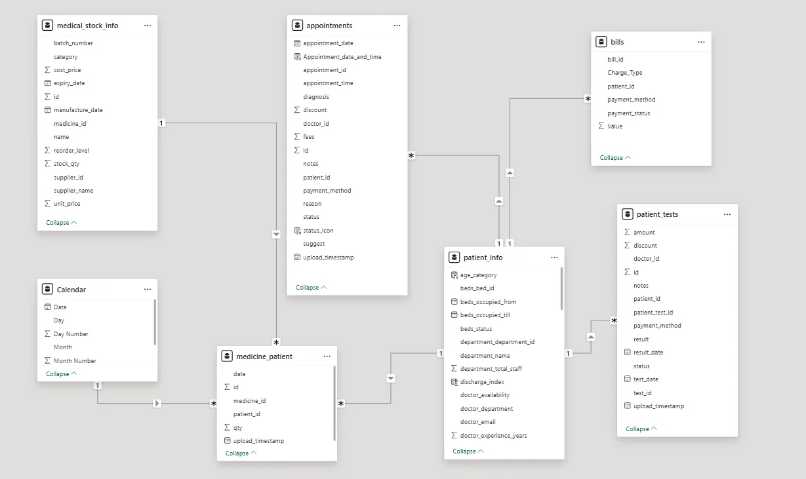
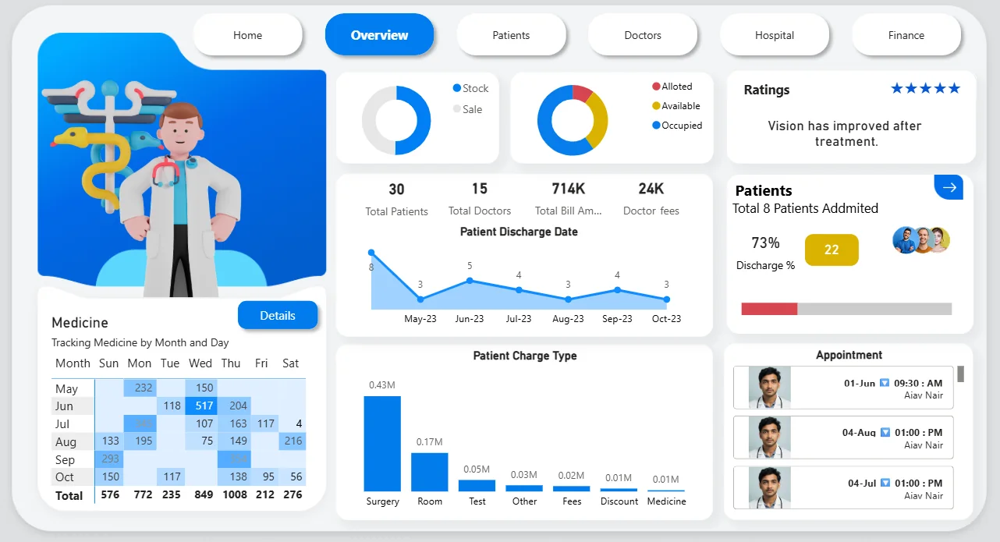
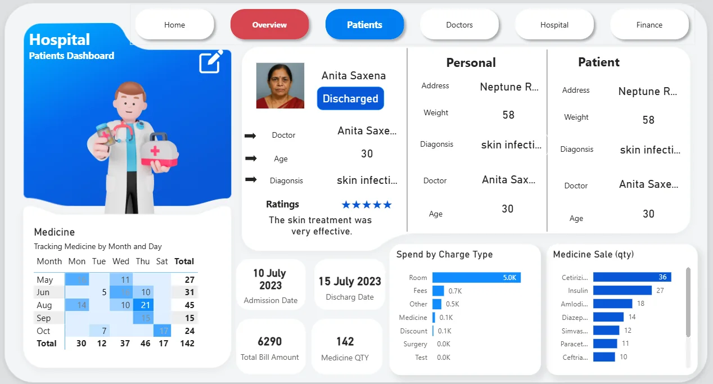
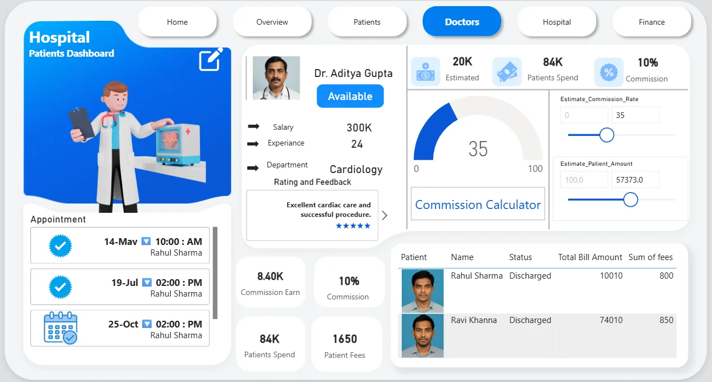
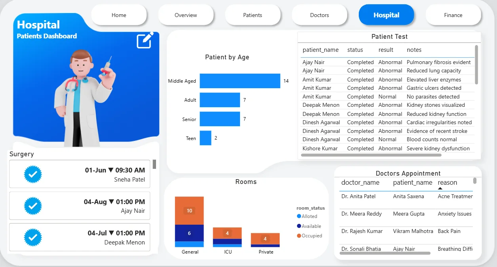
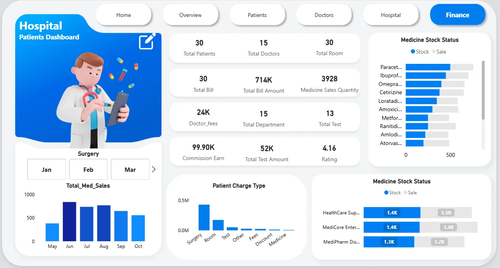
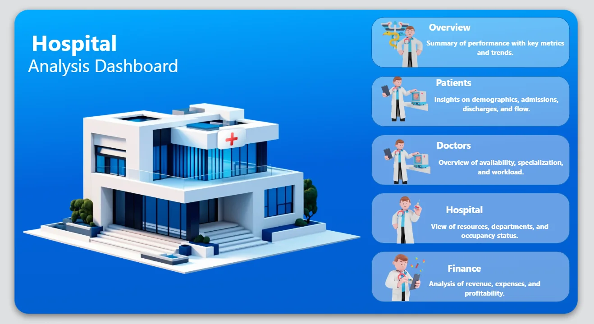

Executive summary
Hospitals generate large amounts of data, but decisions are often reactive. I brought patients, billing, doctors, rooms and pharmacy stock into one Power BI model and built a five-page dashboard so operational problems — concentration risk, discharge delays, stock risk — show up before they hurt.
The clearest finding is a revenue-concentration risk: roughly 60% of the hospital's ₹714K revenue comes from surgery alone, while room revenue looks under-used by comparison.
Business problem
Business question: where in patient flow, billing and inventory is risk concentrated, and what should be monitored first?
| Problem | What the dashboard tracks |
|---|---|
| Patient-flow bottlenecks | Discharge delays and bed occupancy |
| Revenue concentration | Billing split across surgery, tests, rooms and medicines |
| Doctor workload imbalance | Concentration of appointments across doctors |
| Inventory risk | Which medicines dominate usage and need priority stock management |
Dataset
Seven data tables feeding a star schema, built from the hospital's original Excel exports.
A note on scale: the dataset is small (30 patients, 15 doctors), so the value of this project is in the model and dashboard design rather than in statistically strong conclusions.
Data preparation
The repository keeps both the original and prepared data: an Original Dataset folder with more than a dozen separate Excel exports (Patient, Doctor, Appointment, Rooms, Hospital Bills, Medical Stock, Surgery, Staff, Supplier and others), and a Combined New Data folder where these were consolidated into six tables — patient_info, appointments, bills, medicine_patient, patient_tests and medical_stock_info — which is what the Power BI model is actually built on.
Data model

Analytical approach
- 12+ raw Excel exports
- Consolidate to 6 tables
- Star-schema model
- DAX measures
- 5-page dashboard
- Written insights
Key findings
- 30patients
- 15doctors
- ₹714Ktotal revenue
- 30rooms
- 3,928medicine units sold
- 4.16average rating
Business recommendations
Reduce concentration risk
- Revenue mix could be diversified rather than relying on surgery alone
- Room pricing is worth reviewing given its low share of revenue
- ICU occupancy suggests discharge planning could be made more proactive
Operational monitoring
- The three high-usage medicines should be prioritised in stock planning
- The August–October discharge dip is worth investigating for a seasonal or staffing cause
- Doctor workload could be checked for concentration across a small number of doctors
Dashboard showcase
Five report pages plus a home page for navigation. Click a screenshot to enlarge.






Technical implementation
| Tool | Used for |
|---|---|
| Power BI | Model and dashboard |
| DAX | Measures and KPI cards |
| Power Query | Consolidating raw Excel exports into the model's six tables |
| Star schema | Data modelling approach |
Interaction
- Drill-through to patient-level detail
- Interactive filters and slicers
- Dynamic KPI cards
Analysis tools
- What-if commission calculator
- Medicine demand heatmap
Limitations & assumptions
Worth keeping in mind
- The dataset is small (30 patients, 15 doctors) — treat findings as illustrative of the approach, not as statistically robust conclusions.
- No information is available on whether this reflects one hospital's real data or a prepared sample; figures are presented as given in the source files.
- No causal analysis was performed — the discharge dip and ICU occupancy are observations, not diagnosed causes.
Explore the code
The repository includes both the original Excel exports and the combined tables used in the model, alongside the Power BI file.